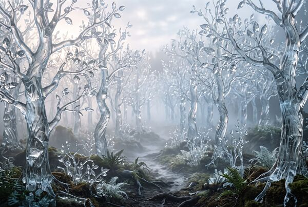

Volume I — First Edition
A comprehensive field guide to territories
encountered only in the state of sleep.
Preface
Every dreamer is, in some sense, an involuntary explorer. We are deposited each night into territories that obey no waking geography, governed by logics that dissolve upon inspection. This atlas does not attempt to explain these places. It attempts only to document them with the same rigor one would apply to any unmapped region: coordinates approximated, features catalogued, hazards noted.
The entries herein are drawn from thousands of first-person reports, cross-referenced where corroborating accounts exist. A territory appears in this atlas only when it has been independently documented by at least three separate dreamers. Singletons, however vivid, remain in the appendix of unverified claims.
From the Atlas
A selection from the full catalog. Each entry represents a distinct and repeatedly-documented dream location.
Class II — Urban / Inverted
A metropolitan skyline suspended above a perfectly still body of water, fully intact but upside-down. Visitors report entering from the water's surface and descending into functional streets and lobbies above.

Class I — Natural / Transmuted
A woodland where every trunk, branch, and leaf is composed of flawless translucent glass. Sound carries strangely. The forest sings in wind that has no apparent source.
Class III — Institutional / Submerged
A vast reference library preserved under fathoms of clear water. The books are legible despite being wet; the pages turn themselves as if searching for a specific passage.
6
Mapped Territories
3
Classification Classes
12
Documented Phenomena
∞
Unverified Reports
Research
Classification systems, recurring phenomena, notes on navigating recurring territories, and a glossary of terms used throughout this atlas.
Read the Field Notes